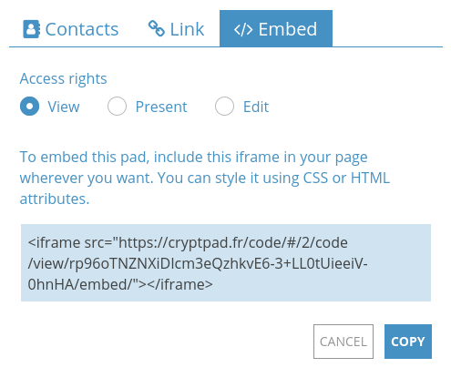
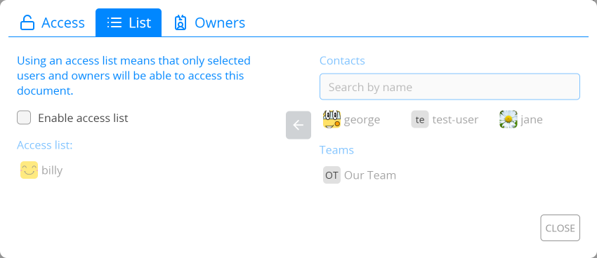
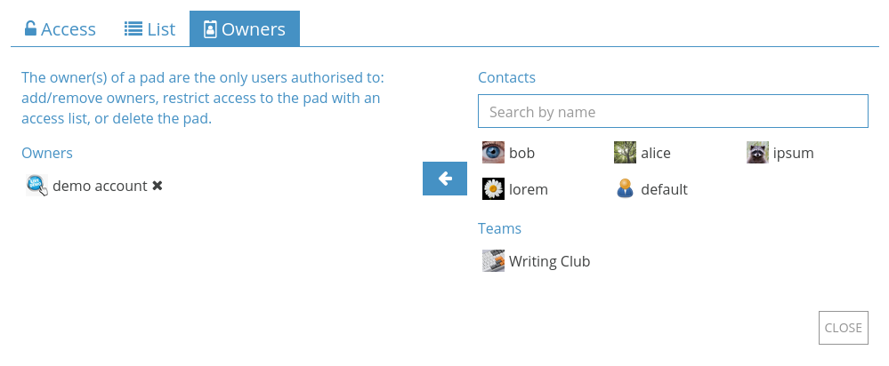

Teilen / Zugriff#
Mit den Menüs Teilen und Zugriff kannst du bestimmen, wie andere Benutzer mit deinen Dokumenten arbeiten können.
Werkzeugleiste im Dokument: Teilen and Zugriff in der Mitte.
Im CryptDrive:
Rechtsklickeauf ein Dokument > Teilen or Zugriff.
Teilen#
Es gibt drei Möglichkeiten, um ein Dokument zu teilen: Mit Kontakten teilen, Einen Link teilen, and Einbetten. In jeden Fall kann bestimmt werden, ob der Empfänger das Dokument bearbeiten oder nur ansehen kann.
Zugriffsrechte#
Es gibt vier Berechtigungsstufen:
Ansehen: Nur lesen, keine Bearbeitung des Dokuments.
Anzeigemodus: Nur lesen der Darstellung des Dokuments, verfügbar in den Anwendungen Code / Markdown und Folien.
Bearbeiten: Lesen und Bearbeiten des Dokuments.
Einmal ansehen mit Selbstzerstörung: Nur lesen, einmal. Sobald der Link vom Empfänger geöffnet wird, wird das Dokument endgültig gelöscht. Eingeloggte Benutzer
Bemerkung
Wenn das Dokument bereits im CryptDrive eines Benutzers mit Bearbeitungsrechten gespeichert ist, wird der Bearbeitungslink auch dann in Dokumenteigenschaften angezeigt, wenn der Benutzer im Ansehen-Modus ist.
Einen Link teilen#
Die Unterseite Link stellt Links bereit, die auf einen Kanal deiner Wahl geteilt werden können. Je nachdem wie du den Link versendest, kann dies mit Sicherheitsrisiken verbunden sein. Für eine zusätzliche Sicherheitsebene wird empfohlen, vor dem Teilen ein Passwort hinzuzufügen.

Um den Link zu einem Dokument kopieren:
Im Dokument: Teilen in der Werkzeugleiste > Link.
Im CryptDrive :
Rechtsklickeauf das Dokument > Teilen > Link.
Dann:
Wähle die Zugriffsrechte und weitere Optionen:
Einbettungsmodus versteckt die Werkzeugleiste und Benutzerliste.
Vorschau zeigt dir, wie der Link aussieht, bevor du ihn teilst.
Kopiere den Link.
Versende den Link.
Einbetten#
Das Einbetten erlaubt, CryptPad-Dokumente in anderen Webseiten anzuzeigen.

Um ein Dokument einzubetten:
Im Dokument: Teilen in der Werzeugleiste > Einbetten.
Im CryptDrive :
Rechtsklickeauf das Dokument > Teilen > Einbetten.
dann
Wähle die Zugriffsrechte.
Kopiere dein Einbettungscode.
Füge den Code auf einer Webseite ein.
Zugriff#
Eingeloggte Benutzer
Dieses Menü kann dazu verwendet werden, den Zugriff auf Dokumente oder geteilte Ordner einzuschränken:
Im Dokument: Zugriff.
Im CryptDrive:
Rechtsklickeauf das Dokument oder geteilten Ordner > Zugriff.
Unterseite "Zugriff"#

Hier werden die Bedingungen für den Zugriff auf das Dokument zusammengefasst:
Ablaufdatum: Datum, an dem das Dokument gelöscht wird. Dieses Datum wird bei der Erstellung des Dokuments festgelegt und kann später nicht mehr geändert werden.
Passwort: Zeigt an, ob ein Passwort festgelegt wurde. Es kann ein neues Passwort festgelegt werden oder ein bestehendes Passwort geändert werden.
Eigentümer: Listet alle Eigentümer des Dokuments auf.
- Zugriffsanfragen:Bearbeitungsrechte anfragen: Für Nutzer nur mit Lesezugriff.Zugriffsanfragen für dieses Pad stummschalten: Versteckt Zugriffsanfragen für dieses Dokument. Eigentümer von Dokumenten
Zugriffsliste: Zeigt die Zugriffsliste und ob sie aktiviert ist.
Zerstören: Löscht das Dokument endgültig.
Zugriffsliste#
Eigentümer von Dokumenten

Die Zugriffsliste beschränkt den Zugriff auf ein Dokument. Wenn aktiviert, können Benutzer, die nicht auf der Liste stehen, nicht auf das Dokument zugreifen, selbst wenn sie es in ihrem CryptDrive gespeichert haben.
Um die Zugriffsliste zu aktivieren, wähle Zugriffsliste aktivieren aus. Die Eigentümer des Dokuments stehen standardmäßig auf der Liste und können nicht entfernt werden.
Um Kontakte oder Teams zu der Liste hinzuzufügen:
Wähle sie aus der Kontaktliste auf der rechten Seite aus.
Füge sie mit der Schaltfläche zu der Liste hinzu.
Um einen Benutzer oder ein Team aus der Liste zu entfernen, verwende die Schaltfläche neben dem Namen.
Eigentümer#

Hier kann die Eigentümerschaft des Dokuments verwaltet werden. Eigentümer haben die folgenden Berechtigungen:
Eine Zugriffsliste aktivieren.
Ein Passwort aktivieren.
Andere Eigentümer hinzufügen oder entfernen.
Das Dokument zerstören.
Die Eigentümerschaft eines Dokuments wird bei der Erstellung festgelegt.
Bemerkung
Wenn ein Dokument ohne Eigentümer erstellt wird, hat niemand die Berechtigung zur Verwaltung der Eigentümerschaft. Das Dokument kann nicht dauerhaft zerstört werden, aber es kann aus dem CryptDrive entfernt werden und wird dann automatisch nach 90 Tagen Inaktivität zerstört.
Eigentümer von Dokumenten
Um Benutzer oder Teams als Eigentümer hinzuzufügen:
Wähle sie aus der Kontaktliste auf der rechten Seite aus.
Füge sie mit der Schaltfläche zu der Liste hinzu.
Um einen Eigentümer zu entfernen, benutze die Schaltfläche neben seinem Namen.